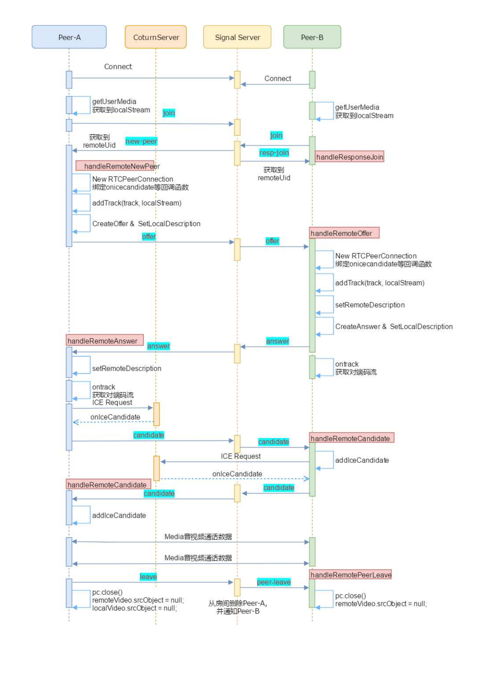

WebRTC基础
WebRTC 是什么
WebRTC 是什么
- WebRTC(Web Real-Time Communication) 是一套旨在实现互联网浏览器之间实时通讯的免费开放API.
- WebRTC 主要包含了两种不同的技术: 媒体捕获设备和点对点连接
WebRTC 不是什么
WebRTC 用于实现实时数据双向通讯, 但不适用于直播等大规模单向数据分发.
由于需要做到双向数据传播, 所有用户需要连接到同一个服务器, 即使像声网这样的企业级 SDK 也只能做到 32 人实时连麦, 百万同时在线(单向数据分发).
直播(RTMP, Real Time Messaging Protocol)只需要做到单向数据传输, 我们可以部署大量服务器与 CDN 实现大规模数据分发.
WebRTC 不是 Web 应用专有的, 其可以运行在浏览器, 桌面应用, 移动设备与 IoT 设备上
WebRTC 组成
WebRTC 是一套 API, 可以根据 API 的使用对象分为
- Web 开发者需要使用的: W3C 定义的 WebAPI
- 浏览器厂商需要实现的: WebRTC 的 C++ 层, 实现了 W3C 定义的 WebAPI
- 浏览器厂商可以自定义重写的: 音视频捕获播放与网络IO
- WebRTC 实现核心模块
- 会话管理: 用来管理音视频, 非音视频数据传输, 处理相关逻辑.
- 音频引擎: 编解码功能, 音频缓冲 buffer, 回音消除.
- 视频引擎: 视频编解码器, 视频缓冲 buffer, 图像增强.
- 数据传输: SRTP传输协议, 多流复用, P2P.
## WebRTC 通话原理
媒体协商: 在通信前需要先使用会话描述协议(SDP, session description protocol)通报通信终端支持的编解码格式, 并确定出一个共有的编解码格式用于通信.
网络协商: 在通信前要找到一条可以相互通讯的链路. 将网络协商所需的信息称为 candidate
在没有 NAT 时, 可以直接通过公网 IP 实现 P2P 连接
在存在 NAT 时, 可以通过端口映射连接则使用端口映射实现 P2P.
由于通信终端不知道自己在 NAT 转换后映射的端口, 通信终端将请求 STUN 服务器, STUN 返回该终端的外网 IP 与端口.
若端口映射(打洞)失败, 中断将连接到 TURN 服务器, TURN 服务器作为中继服务器负责之后通信
coturn 是一个开源的 STUN 与 TURN 服务器实现
信令服务器: 一套包含媒体协商与网络协商的服务器实现, 在实现两种协商的基础上还应该实现其他管理功能(如: 房间管理, 用户管理, 用户校验...). 信令服务器并非需要实现一套固定的标准 / API, 只需要按需开发即可. 以一对一通信为例

连接
- 连接双方与信令服务器建立连接(不指定连接协议), 先连接设备作为房主
- 双方获取自己的媒体流
- 双方加入房间, 先加入者为房主, 后进入者加入后信令服务器通知房主, 同时将房主信息返回给加入者
媒体协商
- 房主创建 RTCPeerConnection, 绑定 onXX 回调
- 房主创建 Track (相当于本地媒体流的句柄以供对方将来使用)
- 房主创建 offer, 生成浏览器的 SDP
- 房主发送 SDP(offer) 到信令服务器, 信令服务器将 offer 转发给对方
- 对方创建 RTCPeerConnection, 绑定 onXX 回调
- 对方创建 Track, 通过对方 track 获取房主码流句柄
- 对方记录房主的 SDP, 生成自己的 answer, 生成自己的 SDP
- 对方发送 answer 到信令服务器, 信令服务器将 answer 转发给房主
- 房主记录对方的 SDP
网络协商
- 房主与对方同时发起网络协商, 发起 ICE 请求到 coturn 服务器, coturn 服务器返回 Candidate.
- 双方将 Candidate 通过信令服务器发送给另一方
- 另一方记录 Candidate 并尝试发起连接
- 由于打洞地址可能变化, 所以某一方可能会收到多个 Candidate, 其应该逐个尝试直到成功连接
离开房间
- 离开者发起离开房间命令, 信令服务器删除用户并通知对方
从这个过程中我们也可以看到, WebRTC 只是提供了一套 API 并没有提供实时通信的详细实现, 详细通信逻辑还需要信令服务器设计者实现
WebRTC 相关协议
RTP 协议
我们一般不直接将音视频数据流通过 UDP 传输, 这是因为音视频数据中一帧数据量远大于 UDP 的MTU, 在发送时需要拆成多个包. 若直接通过 UDP 传输, 我们需要手动维护 UDP 包的顺序并重建帧. RTP 协议实现了音视频传输对帧的维护.
RTP(Real-time Transport Protocol) 实时传输协议为端到端的实时传输提供时间信息和流同步, RTP并不保证服务质量, 服务质量由RTCP来提供.
RTP协议格式:
0 1 2 3
0 1 2 3 4 5 6 7 8 9 0 1 2 3 4 5 6 7 8 9 0 1 2 3 4 5 6 7 8 9 0 1
+-+-+-+-+-+-+-+-+-+-+-+-+-+-+-+-+-+-+-+-+-+-+-+-+-+-+-+-+-+-+-+-+
|V=2|P|X| CC |M| PT | sequence number |
+-+-+-+-+-+-+-+-+-+-+-+-+-+-+-+-+-+-+-+-+-+-+-+-+-+-+-+-+-+-+-+-+
| timestamp |
+-+-+-+-+-+-+-+-+-+-+-+-+-+-+-+-+-+-+-+-+-+-+-+-+-+-+-+-+-+-+-+-+
| synchronization source (SSRC) identifier |
+=+=+=+=+=+=+=+=+=+=+=+=+=+=+=+=+=+=+=+=+=+=+=+=+=+=+=+=+=+=+=+=+
| contributing source (CSRC) identifiers |
| .... |
+-+-+-+-+-+-+-+-+-+-+-+-+-+-+-+-+-+-+-+-+-+-+-+-+-+-+-+-+-+-+-+-+V: RTP协议的版本号, 占2位, 当前协议版本号为2.
P: 填充标志, 占1位, 如果P=1, 则在该报文的尾部填充一个或多个额外的八位组, 它们不是有效载荷的一部分.
X: 扩展标志, 占1位, 如果X=1, 则在RTP报头后跟有一个扩展报头.
CC: CSRC 计数器, 占4位, 指示 CSRC 标识符的个数.
M: 标记, 占1位, 不同的有效载荷有不同的含义, 对于视频, 标记一帧的结束；对于音频, 标记会话的开始.
PT: 有效载荷类型, 占7位, 用于说明RTP报文中有效载荷的类型, 如GSM音频、JPEM图像等,在流媒体中大部分是用来区分音频流和视频流的, 这样便于客户端进行解析. 可以通过payload值知道音频的类型, 视频的类型, 有些公司可能会使用PT值扩展自己的类型；譬如附加类型(字幕, 贴的小图片, 画的框框)
序列号: 占16位, 用于标识发送者所发送的RTP报文的序列号, 每发送一个报文, 序列号增1. 这个字段当下层的承载协议用UDP的时候, 网络状况不好的时候可以用来检查丢包. 同时出现网络抖动的情况可以用来对数据进行重新排序, 在helix服务器中这个字段是从0开始的, 同时音频包和视频包的sequence是分别记数的.
时戳(Timestamp): 占32位, 时戳反映了该RTP报文的第一个八位组的采样时刻. 接收者使用时戳来计算延迟和延迟抖动, 并进行同步控制.
同步信源(SSRC)标识符: 占32位, 用于标识同步信源. 该标识符是随机选择的, 参加同一视频会议的两个同步信源不能有相同的SSRC.
特约信源(CSRC)标识符: 每个CSRC标识符占32位, 可以有0～15个. 每个CSRC标识了包含在该RTP报文有效载荷中的所有特约信源.
如果扩展标志被置位则说明紧跟在报头后面是一个头扩展, 其格式如下:
0 1 2 3 0 1 2 3 4 5 6 7 8 9 0 1 2 3 4 5 6 7 8 9 0 1 2 3 4 5 6 7 8 9 0 1 +-+-+-+-+-+-+-+-+-+-+-+-+-+-+-+-+-+-+-+-+-+-+-+-+-+-+-+-+-+-+-+-+ | defined by profile | length | +-+-+-+-+-+-+-+-+-+-+-+-+-+-+-+-+-+-+-+-+-+-+-+-+-+-+-+-+-+-+-+-+ | header extension | | .... |
RTCP 协议
RTCP(RTP Control Protocol)实时传输控制协议, 同RTP一起用于数据传输的监视, 控制功能.
当应用程序启动一个 RTP 会话时将同时占用两个端口, 分别供 RTP 和 RTCP 使用. RTP 本身并不能为按序传输数据包提供可靠的保证, 也不提供流量控制和拥塞控制, 这些都由 RTCP 来负责完成. 通常 RTCP 会采用与 RTP 相同的分发机制, 向会话中的所有成员周期性地发送控制信息, 应用程序通过接收这些数据, 从中获取会话参与者的相关资料, 以及网络状况、分组丢失概率等反馈信息, 从而能够对服务质量进行控制或者对网络状况进行诊断.
RTCP协议的功能是通过不同的RTCP数据报来实现的, 主要有如下几种类型:
- SR: 发送端报告, 所谓发送端是指发出RTP数据报的应用程序或者终端, 发送端同时也可以是接收端. (SERVER定时间发送给CLIENT).
- RR: 接收端报告, 所谓接收端是指仅接收但不发送RTP数据报的应用程序.
- SDES: 源描述, 主要功能是作为会话成员有关标识信息的载体, 如用户名、邮件地址、电话号码等, 此外还具有向会话成员传达会话控制信息的功能.
- BYE: 通知离开, 主要功能是指示某一个或者几个源不再有效, 即通知会话中的其他成员自己将退出会话.
- APP: 由应用程序自己定义, 解决了RTCP的扩展性问题, 并且为协议的实现者提供了很大的灵活性.
RTCP 协议通过 RR 和 SR 报文交换来获取自己的网络质量, 结构为
0 1 2 3
0 1 2 3 4 5 6 7 8 9 0 1 2 3 4 5 6 7 8 9 0 1 2 3 4 5 6 7 8 9 0 1
+-+-+-+-+-+-+-+-+-+-+-+-+-+-+-+-+-+-+-+-+-+-+-+-+-+-+-+-+-+-+-+-+
header |V=2|P| RC | PT=SR=200 | length |
+-+-+-+-+-+-+-+-+-+-+-+-+-+-+-+-+-+-+-+-+-+-+-+-+-+-+-+-+-+-+-+-+
| SSRC of sender |
+=+=+=+=+=+=+=+=+=+=+=+=+=+=+=+=+=+=+=+=+=+=+=+=+=+=+=+=+=+=+=+=+
sender | NTP timestamp, most significant word |
info +-+-+-+-+-+-+-+-+-+-+-+-+-+-+-+-+-+-+-+-+-+-+-+-+-+-+-+-+-+-+-+-+
| NTP timestamp, least significant word |
+-+-+-+-+-+-+-+-+-+-+-+-+-+-+-+-+-+-+-+-+-+-+-+-+-+-+-+-+-+-+-+-+
| RTP timestamp |
+-+-+-+-+-+-+-+-+-+-+-+-+-+-+-+-+-+-+-+-+-+-+-+-+-+-+-+-+-+-+-+-+
| sender's packet count |
+-+-+-+-+-+-+-+-+-+-+-+-+-+-+-+-+-+-+-+-+-+-+-+-+-+-+-+-+-+-+-+-+
| sender's octet count |
+=+=+=+=+=+=+=+=+=+=+=+=+=+=+=+=+=+=+=+=+=+=+=+=+=+=+=+=+=+=+=+=+
report | SSRC_1 (SSRC of first source) |
block +-+-+-+-+-+-+-+-+-+-+-+-+-+-+-+-+-+-+-+-+-+-+-+-+-+-+-+-+-+-+-+-+
1 | fraction lost | cumulative number of packets lost |
+-+-+-+-+-+-+-+-+-+-+-+-+-+-+-+-+-+-+-+-+-+-+-+-+-+-+-+-+-+-+-+-+
| extended highest sequence number received |
+-+-+-+-+-+-+-+-+-+-+-+-+-+-+-+-+-+-+-+-+-+-+-+-+-+-+-+-+-+-+-+-+
| interarrival jitter |
+-+-+-+-+-+-+-+-+-+-+-+-+-+-+-+-+-+-+-+-+-+-+-+-+-+-+-+-+-+-+-+-+
| last SR (LSR) |
+-+-+-+-+-+-+-+-+-+-+-+-+-+-+-+-+-+-+-+-+-+-+-+-+-+-+-+-+-+-+-+-+
| delay since last SR (DLSR) |
+=+=+=+=+=+=+=+=+=+=+=+=+=+=+=+=+=+=+=+=+=+=+=+=+=+=+=+=+=+=+=+=+
report | SSRC_2 (SSRC of second source) |
block +-+-+-+-+-+-+-+-+-+-+-+-+-+-+-+-+-+-+-+-+-+-+-+-+-+-+-+-+-+-+-+-+
2 : ... :
+=+=+=+=+=+=+=+=+=+=+=+=+=+=+=+=+=+=+=+=+=+=+=+=+=+=+=+=+=+=+=+=+
| profile-specific extensions |
+-+-+-+-+-+-+-+-+-+-+-+-+-+-+-+-+-+-+-+-+-+-+-+-+-+-+-+-+-+-+-+-+SR 包使用了
- 版本(V): 同RTP包头域.
- 填充(P): 同RTP包头域.
- 接收报告计数器(RC): 5比特, 该SR包中的接收报告块的数目, 可以为零.
- 包类型(PT): 8比特, SR包是200.
- 长度域(Length): 16比特, 其中存放的是该SR包以32比特为单位的总长度减一.
- 同步源(SSRC of sender): SR包发送者的同步源标识符. 与对应RTP包中的SSRC一样.
- NTP Timestamp(Network time protocol) SR包发送时的绝对时间值. NTP的作用是同步不同的RTP媒体流.
- RTP Timestamp: 与NTP时间戳对应, 与RTP数据包中的RTP时间戳具有相同的单位和随机初始值.
- Sender’s packet count: 从开始发送包到产生这个SR包这段时间里, 发送者发送的RTP数据包的总数. SSRC改变时, 这个域清零.
- Sender`s octet count: 从开始发送包到产生这个SR包这段时间里, 发送者发送的净荷数据的总字节数(不包括头部和填充) . 发送者改变其SSRC时, 这个域要清零.
- 同步源n的SSRC标识符: 该报告块中包含的是从该源接收到的包的统计信息.
- 丢失率(Fraction Lost): 表明从上一个SR或RR包发出以来从同步源n(SSRC_n)来的RTP数据包的丢失率.
- 累计的包丢失数目: 从开始接收到SSRC_n的包到发送SR,从SSRC_n传过来的RTP数据包的丢失总数.
- 收到的扩展最大序列号: 从SSRC_n收到的RTP数据包中最大的序列号,
- 接收抖动(Interarrival jitter): RTP数据包接受时间的统计方差估计
- 上次SR时间戳(Last SR,LSR): 取最近从SSRC_n收到的SR包中的NTP时间戳的中间32比特. 如果目前还没收到SR包, 则该域清零.
- 上次SR以来的延时(Delay since last SR,DLSR): 上次从SSRC_n收到SR包到发送本报告的延时.
标准 SDP 协议
SDP 描述了
- 音频编解码器是什么,这些编解码器设定的参数是什么
- 使用的传输协议是什么
- 以及包括的音视频媒体是什么
标准 SDP 规范主要包括 SDP 描述格式和 SDP 结构, 而 SDP 结构由会话描述和媒体信息描述两个部分组成. 其中,媒体信息描述包括了:
- 媒体类型
- 媒体格式
- 传输协议
- 传输的 IP 和端口
SDP 由一个会话级描述(session level description)和多个媒体级描述(media level description)组成
- 会话级(session level)的作用域是整个会话,其位置是从 v= 行开始到第一个媒体描述为止。
v=(protocol version): SDP 的版本号o=<username> <session id> <version> <network type> <address type> <address>表示的是对会话发起者的描述, 格式为<username>:用户名,当不关心用户名时,可以用 “-” 代替<session id>:数字串,在整个会话中,必须是唯一的,建议使用 NTP 时间戳<version>:版本号,每次会话数据修改后,该版本值会递增<network type>:网络类型,一般为“IN”,表示“internet”<address type>: 地址类型,一般为 IP4<address>:IP 地址
s=<session name>, 表示一个会话, 在整个 SDP 中有且只有一个会话t=<start time> <stop time>(time the session is active)。描述了会话的开始时间和结束时间。其中,<start time>和<stop time>为 NTP 时间,单位是秒;当<start time>和<stop time>均为零时,表示持久会话。
- 媒体级(media level)是对单个的媒体流进行描述,其位置是从 m= 行开始到下一个媒体描述(即下一个 m=)为止。
m=<media> <port> <transport> <fmt list>(media name and transport address): 表示一个会话<media>: 媒体类型,比如 audio/video 等;<port>: 端口;<transport>: 传输协议,有两种——RTP/AVP 和 UDP;<fmt list>: 媒体格式,即数据负载类型 (Payload Type) 列表。
a=<TYPE>[:<VALUES>](zero or more media attribute lines): 用于进一步描述媒体信息, 常见的有rtpmap与fmtpa=rtpmap:<payload type> <encoding name>/<clock rate> [/<encodingparameters>]: RTP 参数映射表<payload type>: 负载类型,对应 RTP 包中的音视频数据负载类型。<encoding name>: 编码器名称,如 VP8、VP9、OPUS 等。<sample rate>: 采样率,如音频的采样率频率 32000、48000 等。<encodingparameters>: 编码参数,如音频是否是双声道,默认为单声道。
a=fmtp:<payload type> <format specific parameters>: 表示格式参数<payload type>: 负载类型,同样对应 RTP 包中的音视频数据负载类型<format specific parameters>: 指具体参数。
// 会话级
v=0
o=‐ 7017624586836067756 2 IN IP4 127.0.0.1
s=‐
t=0 0
// 媒体级: 一个音频,一个视频。
m=audio 9 UDP/TLS/RTP/SAVPF 111 103 104 9 0 8 106 105 13 126
...
m=video 9 UDP/TLS/RTP/SAVPF 96 97 98 99 100 101 102 122 127 121 125 107 108 109 124 120 123
119 114 115 116
...WebRTC 的 SDP
WebRTC 对 SDP 标准做了调整, 可以将 SDP 按功能分成几大块:
- Session Metadata,会话元数据
- Network Description,网络描述
- Stream Description,流描述
- Security Descriptions,安全描述
- Qos Grouping Descriptions, 服务质量描述
+---------------------+
| v= |
+---------------------+
+---------------------+ +---------------------+
==== | Session Metadata | ===== | o= |
| +---------------------+ +----------------------
| +---------------------+
| | t= |
| +---------------------+
|
|
| +---------------------+
| | c= |
| +---------------------+
| +---------------------+
==== | Network Description | =====
| +---------------------+
| +---------------------+
| | a=candidate |
| +---------------------+
|
|
| +---------------------+
| | m= |
| +---------------------+
| +---------------------+ +---------------------+
==== | Stream Description | ===== | a=rtpmap |
| +---------------------+ +----------------------
| +---------------------+
| | a=fmtp |
| +---------------------+
| +---------------------+
| | a=sendrecv.. |
| +---------------------+
+---------------+
| SEMANTIC |
| COMPONENTS OF |
| SDP |
+---------------+
| +---------------------+
| | a=crypto |
| +---------------------+
| +---------------------+ +---------------------+
==== |Security Descriptions| =====| a=ice-frag |
| +---------------------+ +----------------------
| +---------------------+
| | a=ice-pwd |
| +---------------------+
| +---------------------+
| | a=fingerprint |
| +---------------------+
|
|
|
| +---------------------+
| | a=rtcp-fb |
| +---------------------+
| +---------------------+ +---------------------+
==== | Qos,Grouping | | |
| Descriptions | =====| a=group |
+---------------------+ +----------------------
+---------------------+
| a=rtcpmux |
+---------------------+
安全描述与服务质量描述是新增的属性描述, 例如
//======= 安全描述 ============
// 进入连通性检测的用户名
a=ice‐ufrag:1uEe
// 密码,这两个是用于连通性检测的凭证
a=ice‐pwd:RQe+y7SOLQJET+duNJ+Qbk7z
//DTLS 指纹认证,以识别是否是合法用户
a=fingerprint:sha‐256 35:6F:40:3D:F6:9B:BA:5B:F6:2A:7F:65:59:60:6D:6B:F9:C7:AE:46:44:B4:E4:73:F8:60:67:4D:58:E2:EB:9C
...
//======== 服务质量描述 =========
a=rtcp‐mux
a=rtcp‐rsize
a=rtpmap:96 VP8/90000
a=rtcp‐fb:96 goog‐remb // 使用 google 的带宽评估算法
a=rtcp‐fb:96 transport‐cc // 启动防拥塞
a=rtcp‐fb:96 ccm fir // 解码出错,请求关键帧
a=rtcp‐fb:96 nack
// 启用丢包重传功能
a=rtcp‐fb:96 nack pli // 与 fir 类似Candidate
在网络协商中 Candidate(候选人) 用于传递网络信息, Candidate 并不唯一 (例如: 一个 peer 可能因为有多张网卡对外提供多个 Candidate). 面对多个 Candidate 其他 peer 会优先尝试本地地址(内网地址), 再尝试映射地址, 最后尝试使用中继服务连接.
在进行 P2P 连接时, WebRTC 将尝试 NAT打洞(P2P穿越) 在打洞前, WebRTC 会先判断 NAT 类型, 然后再打洞. NAT 类型有
Full Cone NAT（完全锥型NAT）
所有从同一个私网IP地址和端口（IP1:Port1）发送过来的请求都会被映射成同一个公网IP地址和端口（IP:Port）. 并且, 任何外部主机通过向映射的公网IP地址和端口发送报文, 都可以实现和内部主机进行通信.
这是一种比较宽松的策略, 只要建立了私网IP地址和端口与公网IP地址和端口的映射关系, 所有的Internet上的主机都可以访问该NAT之后的主机.
Restricted Cone NAT（限制锥型NAT）
所有从同一个私网IP地址和端口（IP1:Port1）发送过来的请求都会被映射成同一个公网IP和端口号（IP:Port）. 与完全锥型NAT不同的是, 当且仅当内部主机之前已经向公网主机发送过报文, 此时公网主机才能向私网主机发送报文.
Port Restricted Cone NAT（端口限制锥型NAT）
与限制锥型NAT很相似, 只不过它包括端口号. 也就是说, 一台公网主机（IP2:Port2）想给私网主机发送报文, 必须是这台私网主机先前已经给这个IP地址和端口发送过报文.
Symmetric NAT（对称NAT）
所有从同一个私网IP地址和端口发送到一个特定的目的IP地址和端口的请求, 都会被映射到同一个IP地址和端口. 如果同一台主机使用相同的源地址和端口号发送报文, 但是发往不同的目的地, NAT将会使用不同的映射. 此外, 只有收到数据的公网主机才可以反过来向私网主机发送报文.
这和端口限制锥型NAT不同, 端口限制锥型NAT是所有请求映射到相同的公网IP地址和端口, 而对称NAT是不同的请求有不同的映射.
调用本地媒体设备
可以通过 navigator.mediaDevices.getUserMedia(constraints) 获取本地媒体信息 (MDN), 其中
constraints = { audio: true, video: true }, 分别控制是否获取视频与音频.更多用法
constraints = { audio: true, video: { width: { min: 1280 }, height: { min: 720 } } } constraints = { audio: true, video: { width: { min: 1024, ideal: 1280, max: 1920 }, height: { min: 776, ideal: 720, max: 1080 } } } constraints = { audio: true, video: { width: { ideal: 1280 }, // 理想值 height: { ideal: 720 } } }可以指定视频大小, 但是对浏览器版本要求高
该方法的返回值是 promise, 成功后传入媒体流, 失败传入错误信息, 常见的失败有
NotReadableError该错误会发生在 video 源被占用时
在浏览器显示本地声音与视频
<!DOCTYPE html>
<html>
<body>
<video id="video" controls autoplay></video>
<button id="button">开始捕获</button>
</body>
<script>
function getLocalVideo(videoElem) {
navigator.mediaDevices
.getUserMedia({ // 开启音视频
video: true,
audio: true,
})
.then((stream) => (videoElem.srcObject = stream)) // 成功后将返回流写入 video
.catch((err) => console.log(err.message)); // 失败输出原因
}
document
.getElementById('button')
.addEventListener(
'click',
getLocalVideo.bind(null, document.getElementById('video'))
);
</script>
</html>